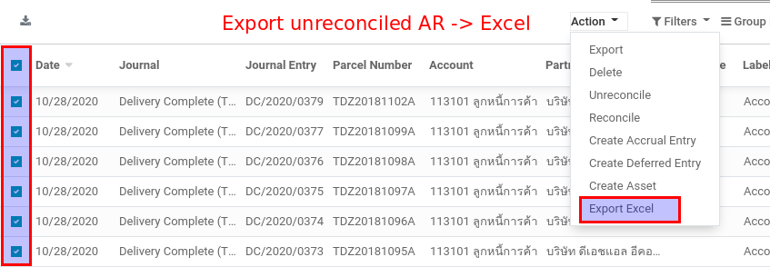
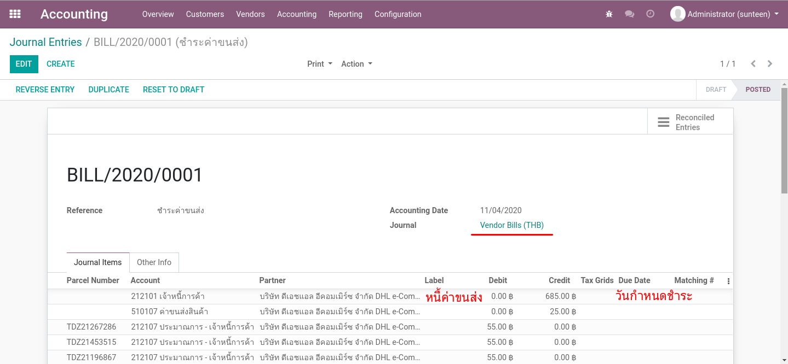

945 Functional Manual¶
Overview¶
ส่วนต่างๆ 3 ส่วนที่ประกอบกันขึ้นมาเป็นระบบ 945
ส่วน Automatic Workflow :: ส่วนนี้เป็นการบันทึก Operations ต่างๆที่เกิดขึ้นจากระบบหน้าบ้านทั้งหมด เช่นการขาย ค่าขนส่ง การส่งของ โดยทั้งหมดจะยิงผ่าน API เข้ามาทางหน้าต่างของ Odoo/945 ที่เกี่ยวข้อง ทำให้เกิดการบันทึกบัญชีตามกระบวนการ และไปจบที่การตั้งหนี้เพื่อรอการ Manual เคลียร์โดยนักบัญชี
ส่วน Manual Operations :: เป็นการทำงานโดยนักบัญชีผ่านหน้าจอเพื่อทำงานต่างๆของ Odoo เช่น การจ่ายหนี้ การจ่าย Commission การรับเงินเข้าธนาคาร
ส่วน Reporting :: ข้อมูลด้านบัญชีทั้งหมดที่เกิดขึ้นในข้อ 1 และ 2 จะถูกนำมาวิเคราะห์ผ่านระบบรายงานของ Odoo หรือผ่านระบบ BI หลังบ้านอื่นๆ
Note
ส่วนนี้ทำงานอัตโนมัติทั้งหมดโดยผู้ใช้แทบไม่ต้องทำอะไร เอกสารชุดนี้จะแนะนำส่วนนี้พอสังเขปเพื่อให้เห็นการทำงานในระบบ
Automatic Workflow¶
Manual Operations¶
Clear Account Receivable¶
เมื่อได้รับ Statement จากธนาคารว่าได้รับเงินเข้ามาจากลูกหนี้ของทาง 945 และต้องการเคลียร์ลูกหนี้ที่ค้าง
ตั้งค่า Mass Automatic Reconcile สำหรับการเคลียร์ลูกหนี้
นำเข้า Statement ตามที่ได้รับแจ้งจากธนาคาร
ทำการ Reconcile และตรวจสอบผลลัพธ์
1. การตั้งค่า Mass Automatic Reconcile¶
Accounting > Accounting > Actions > Mass Automatic Reconcile

2. นำเข้า Statement ตามที่ได้รับแจ้งจากธนาคาร¶
เตรียม Excel โดยใช้ข้อมูลจาก statement ที่ได้รับมา
ที่เมนู Journal Entries สร้างรายการใหม่ ซึ่งจะทำหน้าที่เป็น Payment Entry
คลิกเมนู Action / Import Excel
ตรวจทานให้เรียบร้อยจึงก่อน Post
ค้นหา journal items ที่สนใจเพื่อ export มาเป็นค่าเริ่มต้น
Note
ขั้นตอนนี้เป็นขั้นตอนพิเศษเพื่อได้ข้อมูลทดสอบ การทำงานจริงข้อมูลจะมาจาก statement ตรงๆ

โดยสามารถค้นหารายการที่ยังไม่ได้รับการเคลียร์ ด้วยด้วย Filter ดังต่อไปนี้
- Filtered / Group By
Posted
Unreconciled
Account = ลูกหนี้การค้า
Partner = Transporter (เช่น DHL, SCB, etc.)
ถ้าต้องการเราสามารถสร้าง Save Filter เอาไว้ใช้งานได้

เลือกรายการที่สนใจ เพื่อนำข้อมูลออกมาที่ Excel


เพิ่มรายการในขา Bank เพื่อให้ Journal Entry นี้ดุล

Note
ระบบจะใช้ sheet = Journal Items ในการอัพเดทข้อมูล
สร้าง Journal Entry ใหม่ ทำหน้าที่เป็นเสมือนกับ Payment Entry

เพิ่มรายการด้วยการ Import Excel ตามที่ได้เตรียมไว้


Note
ต้องตรวจสอบให้แน่ใจ แล้วจึงค่อย Post
3. ทำการ Reconcile และตรวจสอบผลลัพธ์¶
ที่เมนู Mass Automatic Reconcile เลือก Profile = Customer Payment
กดปุ่ม Start Auto Reconciliation ระบบจะทำการ Reconcile รายการที่มี Partner และ Parcel ID เดียวกัน
กดปุ่ม Display Items Reconciled On The Last Run เพื่อดูรายการที่ถูก Reconciled ไป
หากต้องการยกเลิกสิ่งที่ทำไปให้ทำการ Reverse Entry
ไปที่เมนู Mass Automatic Reconcile แล้วเลือก/สร้าง Profile = Customer Payment แล้วจีง Start Reconcile

ระบบจะมีการเก็บประวัติของการ Reconcile เอาไว้ สามารถคลิกเพื่อตรวจสอบได้

Note
เราสามารถตั้ง Schedule Job ให้ Start Auto Reconciliation ได้อย่างอัตโนมัติหากต้องการ
รีวิวรายการที่เกิดขึ้น ให้สังเกตุที่ Reconcile ID ที่ระบบได้สร้างขึ้นเพื่อ Match Dr/Cr ล้างกัน

หากต้องการยกเลิกสิ่งที่ได้ทำไป ให้ทำการ Reverse Entry ระบบจะสร้างอีก Journal Entry เพื่อล้างตัวเอง

Clear AP Commission¶
การบันทึกคู่บญชีอัตโนมัติของ Delivery Complete ได้ทำให้เกิดค่าคอมมิชชั่น ซึ่งทาง 945 ต้องทำจ่ายให้กันผู้ได้รับส่วนแบ่ง
ตั้งค่า Mass Automatic Reconcile สำหรับการเคลียร์เจ้าหนี้
เลือกรายการที่ต้องทำจ่าย โดยดูตามวันที่ (ศุกร์ถัดไป) และนำไปสร้าง Journal Entry สำหรับการจ่ายเงิน
ออก Withholding Tax Cert ให้กับผู้รับเงิน
ทำการ Reconcile และตรวจสอบผลลัพธ์
1. การตั้งค่า Mass Automatic Reconcile¶
Accounting > Actions > Mass Automatic Reconcile
สร้าง Profile สำหรับ Supplier Payment

Note
เนื่องจากเราไม่ได้แบ่ง Account Code เป็็นเรื่องย่อยๆ Mass Reconcile นี้อาจถูกใช้่ร่วมกับการจ่ายเงินด้านอื่นๆที่ใช้ AP Account เดียวกันด้วย
2. เลือกรายการที่ต้องทำจ่าย¶
สำหรับ Commission จะดูตามวันที่ (เช่น ศุกร์ถัดไป) โดยสามารถค้นหาที่เมนู Journal Items ด้วย Filter ดังต่อไปนี้
- Filtered / Group By
Posted
Unreconciled
Account = เจ้าหนี้การค้า
Journal Item’s Label = Account Payable (Commission)
- Group by
Due Date
Partner
เลือกรายการที่ต้องการจ่ายค่า Commission ให้และทำการ Export Excel (ระบบจะสลับ Dr/Cr ตั้งให้)
จากรายการที่เลือก ให้เลือก Action > Export Excel

จากค่าเริ่มต้นที่ได้ ให้เพิ่มบรรทัด Bank และ WHT (คำนวนเอง) ให้ดุลกัน

สร้าง Journal Entry ใหม่ ทำหน้าที่เป็นเสมือนกับ Payment Entry แล้วจึงสร้างรายการด้วยการ Import Excel

Note
ต้องตรวจสอบให้แน่ใจ แล้วจึงค่อย Post
3. ออก Withholding Tax Cert ให้กับผู้รับเงิน¶
จาก Journal Entry ในขั้นตอนก่อน เลือก Action > Create Withholding Cert

ระบบจะช่วยสร้าง Cert จากรายการที่บันทึก Account Code - WHT

ให้ผู้ใช้งานกรอกข้อมูลให้ครบแล้วกด Save ตรวจสอบความถูกต้องแล้วกดปุ่ม Done

เลือก Print > Withholding Tax Cert เป็น PDF

Note
ผู้ใช้งานสามารถดู Certificate. ทั้งหมดในภายหลังได้ที่เมนู Accounting > Vendors > WT Certificates
4. ทำการ Reconcile และตรวจสอบผลลัพธ์¶
ที่เมนู Mass Automatic Reconcile เลือก Profile = Supplier Payment
กดปุ่ม Start Auto Reconciliation ระบบจะทำการ Reconcile รายการที่มี Partner และ Parcel ID เดียวกัน
กดปุ่ม Display Items Reconciled On The Last Run เพื่อดูรายการที่ถูก Reconciled ไป
หากต้องการยกเลิกสิ่งที่ทำไปที่ Journal Entry ให้ทำการ Reverse Entry

Note
เราสามารถตั้ง Schedule Job ให้ Start Auto Reconciliation ได้อย่างอัตโนมัติหากต้องการ
Clear AP ประมาณการค่าขนส่ง¶
ขั้นตอนนี้จะเป็นการบันทึกการเคลียร์ค่าขนส่งตามที่ประมาณการไว้ จากการได้ Invoice ค่าขนส่งจริงที่ส่งเข้ามาจากผู้ให้บริการ โดยจะมีการหักภาษี ณ ที่จ่าย ภงด 53 ไว้ 1% พร้อมกับส่วนต่างประมาณการกับค่าขนส่งจริง
ตั้งค่า Mass Automatic Reconcile สำหรับการเคลียร์เจ้าหนี้
เลือกรายการที่ต้องทำจ่าย (ครบกำหนดวันที่ 15 ของ 2 เดือนหลัง) และนำไปสร้าง Journal Entry สำหรับการจ่าย (เทียบกับค่าขนส่งจริง)
ออก Withholding Tax Cert
ทำการ Reconcile และตรวจสอบผลลัพธ์
1. การตั้งค่า Mass Automatic Reconcile¶
Accounting > Actions > Mass Automatic Reconcile
สร้าง Profile สำหรับ Supplier Payment (ประมาณการค่าขนส่ง)

Note
เนื่องจากเราไม่ได้แบ่ง Account Code เป็็นเรื่องย่อยๆ Mass Reconcile นี้อาจถูกใช้่ร่วมกับการจ่ายเงินด้านอื่นๆที่ใช้ AP Account เดียวกันด้วย
2. เลือกรายการที่ต้องทำจ่าย¶
สำหรับ Commission จะดูตามวันที่ (เช่น ศุกร์ถัดไป) โดยสามารถค้นหาที่เมนู Journal Items ด้วย Filter ดังต่อไปนี้
- Filtered / Group By
Posted
Unreconciled
Account = ประมาณการ - เจ้าหนี้การค้า
Journal Item’s Label = Transportation Cost Estimated
- Group by
Due Date
Partner
เลือกรายการที่ต้องการจ่ายค่า Transportation และทำการ Export Excel (ระบบจะสลับ Dr/Cr ตั้งให้)
จากรายการที่เลือก ให้เลือก Action > Export Excel (เลือก Template ???)

จากค่าเริ่มต้นที่ได้ ให้เพิ่มบรรทัดส่วนต่างค่าขนส่ง และ WHT (คำนวนเอง) ให้ดุลกัน

สร้าง Journal Entry ใหม่ ทำหน้าที่เป็นเสมือนกับ Payment Entry แล้วจึงสร้างรายการด้วยการ Import Excel
Note
ต้องตรวจสอบให้แน่ใจ แล้วจึงค่อย Post
3. ออก Withholding Tax Cert ให้กับผู้รับเงิน¶
จาก Journal Entry ในขั้นตอนก่อน เลือก Action > Create Withholding Cert
ระบบจะช่วยสร้าง Cert จากรายการที่บันทึก Account Code - WHT
ให้ผู้ใช้งานกรอกข้อมูลให้ครบแล้วกด Save ตรวจสอบความถูกต้องแล้วกดปุ่ม Done
เลือก Print > Withholding Tax Cert เป็น PDF

Note
ผู้ใช้งานสามารถดู Certificate. ทั้งหมดในภายหลังได้ที่เมนู Accounting > Vendors > WT Certificates
4. ทำการ Reconcile และตรวจสอบผลลัพธ์¶
ที่เมนู Mass Automatic Reconcile เลือก Profile = Supplier Payment (ประมาณการค่าขนส่ง)
กดปุ่ม Start Auto Reconciliation ระบบจะทำการ Reconcile รายการที่มี Partner และ Parcel ID เดียวกัน
กดปุ่ม Display Items Reconciled On The Last Run เพื่อดูรายการที่ถูก Reconciled ไป
หากต้องการยกเลิกสิ่งที่ทำไปที่ Journal Entry ให้ทำการ Reverse Entry
Note
เราสามารถตั้ง Schedule Job ให้ Start Auto Reconciliation ได้อย่างอัตโนมัติหากต้องการ